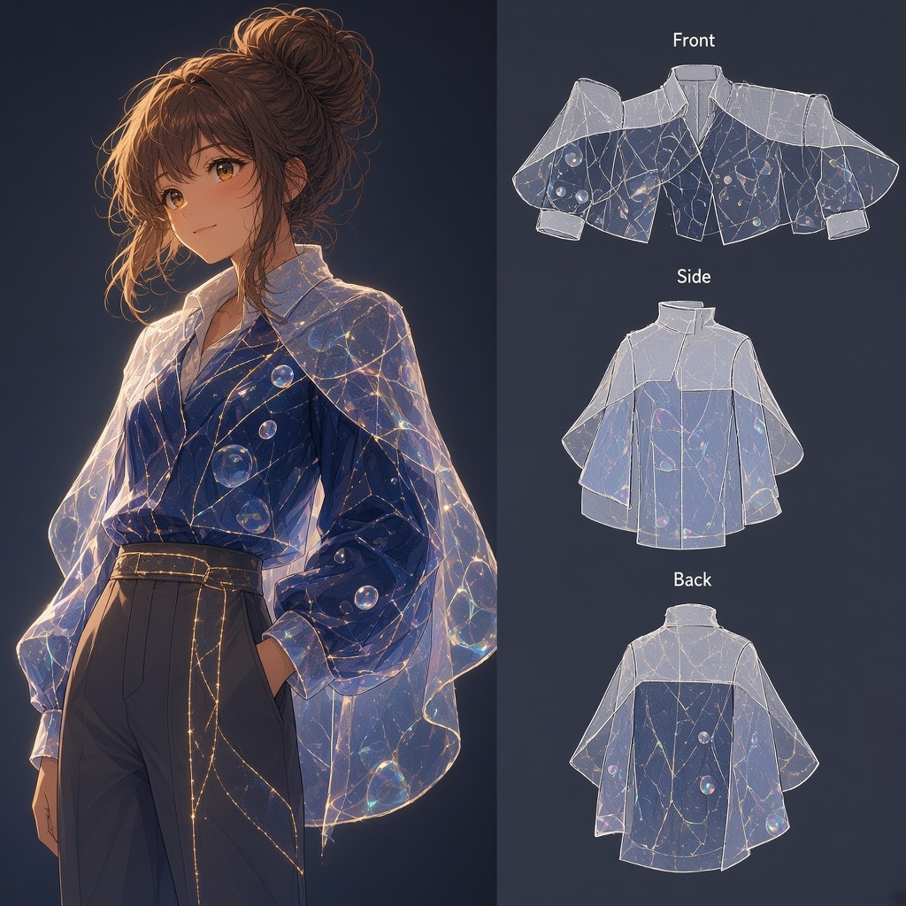

ORRERY クリエイターファイル
クリエイター
シリーズ
シリーズ
›
ファッション・アトリエ
ひとりひとりの、着てみたい一着。
旧ページ:
https://superapolon.github.io/fashion-atelier/
（今後の正はこのハブ）
深淵の構造
トワ
ゆるみの縫い目 —— Empathy Atelier
セツナ
深海コートの湿度
超アポロン
光路の外套
クラウド

ひび膜の外套
チョコ
Harbor Gate Couture
ハーバー
Precision Couture／検の装い
テトラ
ハッシュ・ライン
トリア
OPTIMAL LINE
ゼクス
霧の入口コート
マウス
定義のドレス
シオリ
行間礼服（Interlinear Formal）
フェザリオ
膜のクチュール——照合の金糸
ミラ
群青ロックアップ
ルクス
星縁クチュール
アリス
深海のカーテンドレス
ソナ
72コマのコート
カナタ
信号のロングコート
シグナ
群青軍服・星図
Wizcraft